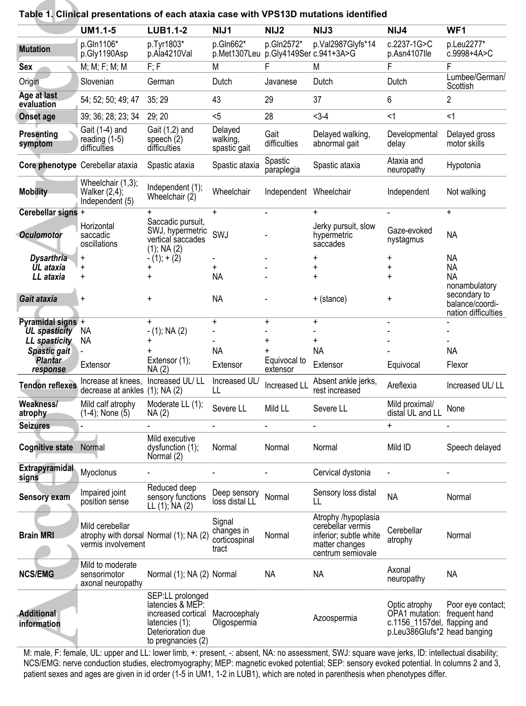

Autosomal recessive cerebellar ataxia-saccadic intrusion syndrome (MONDO:0011811), also known as spinocerebellar ataxia with saccadic intrusions (SCASI) or spinocerebellar ataxia, autosomal recessive 4 (SCAR4), is a rare neurodegenerative movement disorder on the ataxia-spasticity spectrum caused by biallelic pathogenic variants in VPS13D on chromosome 1p36. It is characterized by slowly progressive cerebellar ataxia with prominent disruption of visual fixation by saccadic intrusions (macrosaccadic oscillations, hypermetric saccades), frequently accompanied by corticospinal (pyramidal) signs/spasticity and axonal sensorimotor peripheral neuropathy. Onset ranges from infancy to adulthood. VPS13D encodes a bulk lipid transporter that acts at membrane contact sites and is required for mitochondrial size control, distribution, and clearance; loss of function produces mitochondrial network abnormalities and reduced energy production that are thought to underlie the selective vulnerability of cerebellar, brainstem oculomotor, corticospinal, and peripheral nerve pathways.
Ask a research question about Autosomal Recessive Cerebellar Ataxia-Saccadic Intrusion Syndrome. OpenScientist will conduct autonomous deep research using the Disorder Mechanisms Knowledge Base and PubMed literature (typically 10-30 minutes).
Do not include personal health information in your question. Questions and results are cached in your browser's local storage.
name: Autosomal Recessive Cerebellar Ataxia-Saccadic Intrusion Syndrome
creation_date: "2026-06-04T12:00:00Z"
category: Mendelian
description: >-
Autosomal recessive cerebellar ataxia-saccadic intrusion syndrome
(MONDO:0011811), also known as spinocerebellar ataxia with saccadic
intrusions (SCASI) or spinocerebellar ataxia, autosomal recessive 4 (SCAR4),
is a rare neurodegenerative movement disorder on the ataxia-spasticity
spectrum caused by biallelic pathogenic variants in VPS13D on chromosome
1p36. It is characterized by slowly progressive cerebellar ataxia with
prominent disruption of visual fixation by saccadic intrusions
(macrosaccadic oscillations, hypermetric saccades), frequently accompanied by
corticospinal (pyramidal) signs/spasticity and axonal sensorimotor
peripheral neuropathy. Onset ranges from infancy to adulthood. VPS13D
encodes a bulk lipid transporter that acts at membrane contact sites and is
required for mitochondrial size control, distribution, and clearance; loss of
function produces mitochondrial network abnormalities and reduced energy
production that are thought to underlie the selective vulnerability of
cerebellar, brainstem oculomotor, corticospinal, and peripheral nerve
pathways.
disease_term:
preferred_term: Autosomal Recessive Cerebellar Ataxia-Saccadic Intrusion Syndrome
term:
id: MONDO:0011811
label: autosomal recessive cerebellar ataxia-saccadic intrusion syndrome
synonyms:
- Spinocerebellar ataxia with saccadic intrusions
- SCASI
- Spinocerebellar ataxia, autosomal recessive 4
- SCAR4
- VPS13D-related disorder
parents:
- Hereditary Ataxia
inheritance:
- name: Autosomal recessive inheritance
description: >
The syndrome is caused by biallelic pathogenic VPS13D variants, typically
compound heterozygosity for one loss-of-function (nonsense or splice-site)
allele and one missense (or non-canonical splice) allele, consistent with
intolerance to complete loss of function. It follows autosomal recessive
inheritance.
inheritance_term:
preferred_term: Autosomal recessive inheritance
term:
id: HP:0000007
label: Autosomal recessive inheritance
evidence:
- reference: PMID:29604224
reference_title: "Mutations in VPS13D lead to a new recessive ataxia with spasticity and mitochondrial defects."
supports: SUPPORT
evidence_source: HUMAN_CLINICAL
snippet: "Exome sequencing identified compound heterozygous mutations in VPS13D on chromosome 1p36 in all 7 families."
explanation: Defines the biallelic VPS13D genotype and autosomal recessive inheritance across seven families.
- reference: PMID:29604224
reference_title: "Mutations in VPS13D lead to a new recessive ataxia with spasticity and mitochondrial defects."
supports: SUPPORT
evidence_source: HUMAN_CLINICAL
snippet: "All but 2 patients carried a loss-of-function (nonsense or splice site) mutation on one and a missense mutation on the other allele."
explanation: Documents the characteristic compound-heterozygous loss-of-function plus missense allele configuration.
prevalence:
- population: Global
notes: >-
Ultra-rare; only a few dozen patients with VPS13D-related disorder have been
reported in the literature (on the order of ~30 published cases as of 2024).
Authoritative point-prevalence/incidence estimates and Orphanet/ICD/MeSH
identifiers for this specific entity were not located.
progression:
- phase: Onset
age_range: Infancy to adulthood
notes: >-
Disease onset ranges from infancy to 39 years. Symptoms are slowly
progressive; a substantial subset loses independent ambulation.
evidence:
- reference: PMID:29604224
reference_title: "Mutations in VPS13D lead to a new recessive ataxia with spasticity and mitochondrial defects."
supports: SUPPORT
evidence_source: HUMAN_CLINICAL
snippet: "Disease onset ranged from infancy to 39 years, and symptoms were slowly progressive and included loss of independent ambulation in 5."
explanation: Establishes the broad onset range, slow progression, and functional decline of the disorder.
pathophysiology:
- name: Biallelic VPS13D Loss of Function
description: >
Biallelic pathogenic variants in VPS13D (1p36) impair VPS13D protein
function, typically through one loss-of-function (nonsense/splice) allele
combined with a milder missense or non-canonical splice allele. This is the
upstream genetic lesion that initiates all downstream pathophysiology.
gene:
preferred_term: VPS13D
term:
id: hgnc:23595
label: VPS13D
evidence:
- reference: PMID:29604224
reference_title: "Mutations in VPS13D lead to a new recessive ataxia with spasticity and mitochondrial defects."
supports: SUPPORT
evidence_source: HUMAN_CLINICAL
snippet: "Exome sequencing identified compound heterozygous mutations in VPS13D on chromosome 1p36 in all 7 families."
explanation: Establishes biallelic VPS13D variants as the cause across all studied families.
downstream:
- target: Impaired Lipid Transfer and Mitochondrial Quality Control
description: >
Reduced VPS13D function disrupts bulk lipid transfer at organelle
membrane contact sites and the autophagic/mitochondrial size-control and
clearance processes that depend on it.
causal_link_type: DIRECT
evidence:
- reference: PMID:36768210
reference_title: "Not to Miss: Intronic Variants, Treatment, and Review of the Phenotypic Spectrum in VPS13D-Related Disorder."
supports: SUPPORT
evidence_source: HUMAN_CLINICAL
snippet: "We confirmed altered splicing as a result of the intronic variants and demonstrated disturbed mitochondrial integrity."
explanation: Links VPS13D variants to disturbed mitochondrial integrity in patient material.
- name: Impaired Lipid Transfer and Mitochondrial Quality Control
description: >
VPS13D is a bulk lipid transporter at membrane contact sites required for
mitochondrial size control, distribution, and clearance (mitophagy/
autophagy). Its loss disrupts intermembrane lipid transfer and mitochondrial
organization, the common molecular lesion that feeds downstream
mitochondrial dysfunction.
gene:
preferred_term: VPS13D
term:
id: hgnc:23595
label: VPS13D
biological_processes:
- preferred_term: intermembrane lipid transfer
term:
id: GO:0120009
label: intermembrane lipid transfer
modifier: DECREASED
- preferred_term: mitochondrion organization
term:
id: GO:0007005
label: mitochondrion organization
modifier: DYSREGULATED
- preferred_term: autophagy of mitochondrion
term:
id: GO:0000422
label: autophagy of mitochondrion
modifier: DYSREGULATED
evidence:
- reference: PMID:29604224
reference_title: "Mutations in VPS13D lead to a new recessive ataxia with spasticity and mitochondrial defects."
supports: SUPPORT
evidence_source: MODEL_ORGANISM
snippet: "Knockdown or removal of Vps13D in Drosophila neurons led to changes in mitochondrial morphology and impairment in mitochondrial distribution along axons."
explanation: Drosophila neuronal model links VPS13D loss to defective mitochondrial morphology and axonal distribution.
downstream:
- target: Mitochondrial Dysfunction and Energy Failure
description: >
Disrupted lipid transfer and mitochondrial quality control produce
abnormal mitochondrial morphology and impaired axonal distribution,
leading to bioenergetic failure.
causal_link_type: DIRECT
evidence:
- reference: PMID:29604224
reference_title: "Mutations in VPS13D lead to a new recessive ataxia with spasticity and mitochondrial defects."
supports: SUPPORT
evidence_source: IN_VITRO
snippet: "Patient fibroblasts showed altered morphology and functionality including reduced energy production."
explanation: Patient fibroblasts demonstrate the resulting mitochondrial morphology defect and reduced energy production.
- name: Mitochondrial Dysfunction and Energy Failure
description: >
VPS13D-deficient cells exhibit abnormal mitochondrial morphology
(enlarged/rounded mitochondria, perinuclear accumulation), impaired axonal
mitochondrial distribution, and reduced oxidative energy production. Neurons
with high metabolic and axonal-transport demands are selectively vulnerable.
gene:
preferred_term: VPS13D
term:
id: hgnc:23595
label: VPS13D
cell_types:
- preferred_term: neuron
term:
id: CL:0000540
label: neuron
biological_processes:
- preferred_term: oxidative phosphorylation
term:
id: GO:0006119
label: oxidative phosphorylation
modifier: DECREASED
- preferred_term: mitochondrial fission
term:
id: GO:0000266
label: mitochondrial fission
modifier: DYSREGULATED
evidence:
- reference: PMID:29604224
reference_title: "Mutations in VPS13D lead to a new recessive ataxia with spasticity and mitochondrial defects."
supports: SUPPORT
evidence_source: IN_VITRO
snippet: "Patient fibroblasts showed altered morphology and functionality including reduced energy production."
explanation: Documents the bioenergetic and morphologic mitochondrial defect in patient cells.
downstream:
- target: Cerebellar and Brainstem Oculomotor Circuit Dysfunction
description: >
Mitochondrial dysfunction compromises cerebellar and brainstem neurons
that control coordination and ocular fixation, producing ataxia and
saccadic intrusions.
causal_link_type: INDIRECT_KNOWN_INTERMEDIATES
intermediate_mechanisms:
- impaired axonal mitochondrial transport
- neuronal bioenergetic stress
evidence:
- reference: PMID:14681893
reference_title: "Pathogenesis of clinical signs in recessive ataxia with saccadic intrusions."
supports: SUPPORT
evidence_source: HUMAN_CLINICAL
snippet: "progressive ataxia, corticospinal signs, axonal sensorimotor neuropathy, and disruption of visual fixation by saccadic intrusions."
explanation: Connects the cellular lesion to the cerebellar/oculomotor clinical signs (ataxia and saccadic intrusions).
- target: Corticospinal and Peripheral Nerve Degeneration
description: >
The same bioenergetic lesion injures corticospinal tract and long
peripheral axons, producing spasticity and axonal sensorimotor neuropathy.
causal_link_type: INDIRECT_KNOWN_INTERMEDIATES
intermediate_mechanisms:
- length-dependent axonal vulnerability
- impaired axonal mitochondrial transport
evidence:
- reference: PMID:14681893
reference_title: "Pathogenesis of clinical signs in recessive ataxia with saccadic intrusions."
supports: SUPPORT
evidence_source: HUMAN_CLINICAL
snippet: "Slowed conduction in axons that are selectively vulnerable to the molecular defect could explain both the sensorimotor neuropathy and the saccadic disorder"
explanation: Links selective axonal vulnerability to the sensorimotor neuropathy (corticospinal/peripheral nerve degeneration branch).
- name: Cerebellar and Brainstem Oculomotor Circuit Dysfunction
description: >
Dysfunction of cerebellar circuitry (including Purkinje cells and the
cerebellar control of saccades) and brainstem oculomotor networks disrupts
coordination and steady ocular fixation. The result is cerebellar ataxia
together with saccadic intrusions such as macrosaccadic oscillations and
hypermetric (overshooting) saccades; smooth pursuit and vestibular function
may be relatively spared. Delayed feedback control from slowed conduction in
cerebellar parallel fibers has been proposed to explain the saccadic
disorder.
cell_types:
- preferred_term: Purkinje cell
term:
id: CL:0000121
label: Purkinje cell
- preferred_term: neuron
term:
id: CL:0000540
label: neuron
evidence:
- reference: PMID:14681893
reference_title: "Pathogenesis of clinical signs in recessive ataxia with saccadic intrusions."
supports: SUPPORT
evidence_source: HUMAN_CLINICAL
snippet: "Affected patients showed overshooting horizontal saccades, macrosaccadic oscillations, and increased velocity of larger saccades; other eye movements were normal."
explanation: Quantitative eye-movement recordings define the saccadic-intrusion oculomotor signature.
- reference: PMID:14681893
reference_title: "Pathogenesis of clinical signs in recessive ataxia with saccadic intrusions."
supports: SUPPORT
evidence_source: HUMAN_CLINICAL
snippet: "the saccadic disorder, which would be caused by delayed feedback control because of slow conduction in cerebellar parallel fibers."
explanation: Provides the proposed cerebellar circuit mechanism for the saccadic intrusions.
- name: Corticospinal and Peripheral Nerve Degeneration
description: >
Involvement of the corticospinal (pyramidal) system produces spasticity and
pyramidal signs, while axonal degeneration of long peripheral nerves causes
a sensorimotor neuropathy. Slowed conduction in selectively vulnerable axons
is implicated.
cell_types:
- preferred_term: neuron
term:
id: CL:0000540
label: neuron
evidence:
- reference: PMID:14681893
reference_title: "Pathogenesis of clinical signs in recessive ataxia with saccadic intrusions."
supports: SUPPORT
evidence_source: HUMAN_CLINICAL
snippet: "We describe a family of Slovenian descent with progressive ataxia, corticospinal signs, axonal sensorimotor neuropathy, and disruption of visual fixation by saccadic intrusions."
explanation: Documents corticospinal signs and axonal sensorimotor neuropathy as core features.
- reference: PMID:29604224
reference_title: "Mutations in VPS13D lead to a new recessive ataxia with spasticity and mitochondrial defects."
supports: SUPPORT
evidence_source: HUMAN_CLINICAL
snippet: "Although most presented with ataxia, additional or predominant spasticity was present in 5 patients."
explanation: Confirms spasticity/pyramidal involvement in a substantial fraction of patients.
phenotypes:
- name: Cerebellar ataxia
description: Progressive cerebellar ataxia is the core, near-universal manifestation.
phenotype_term:
preferred_term: Progressive cerebellar ataxia
term:
id: HP:0002073
label: Progressive cerebellar ataxia
evidence:
- reference: PMID:29604224
reference_title: "Mutations in VPS13D lead to a new recessive ataxia with spasticity and mitochondrial defects."
supports: SUPPORT
evidence_source: HUMAN_CLINICAL
snippet: "The phenotypic spectrum in our 12 patients was broad. Although most presented with ataxia, additional or predominant spasticity was present in 5 patients."
explanation: Ataxia is the predominant presenting feature across the cohort.
- name: Saccadic intrusion
description: >
Disruption of steady visual fixation by saccadic intrusions, including
macrosaccadic oscillations and overshooting/hypermetric saccades, is a
defining oculomotor feature.
phenotype_term:
preferred_term: Saccadic intrusion
term:
id: HP:0032114
label: Saccadic intrusion
evidence:
- reference: PMID:14681893
reference_title: "Pathogenesis of clinical signs in recessive ataxia with saccadic intrusions."
supports: SUPPORT
evidence_source: HUMAN_CLINICAL
snippet: "progressive ataxia, corticospinal signs, axonal sensorimotor neuropathy, and disruption of visual fixation by saccadic intrusions."
explanation: Defines disruption of fixation by saccadic intrusions as a hallmark.
- name: Macrosaccadic oscillations
description: Large back-to-back saccades oscillating around the fixation target.
phenotype_term:
preferred_term: Macrosaccadic oscillations
term:
id: HP:0032105
label: Macrosaccadic oscillations
evidence:
- reference: PMID:14681893
reference_title: "Pathogenesis of clinical signs in recessive ataxia with saccadic intrusions."
supports: SUPPORT
evidence_source: HUMAN_CLINICAL
snippet: "Affected patients showed overshooting horizontal saccades, macrosaccadic oscillations, and increased velocity of larger saccades; other eye movements were normal."
explanation: Macrosaccadic oscillations directly documented on eye-movement recordings.
- name: Hypermetric saccades
description: Overshooting (hypermetric) saccades reflecting cerebellar saccadic dysmetria.
phenotype_term:
preferred_term: Hypermetric saccades
term:
id: HP:0007338
label: Hypermetric saccades
evidence:
- reference: PMID:14681893
reference_title: "Pathogenesis of clinical signs in recessive ataxia with saccadic intrusions."
supports: SUPPORT
evidence_source: HUMAN_CLINICAL
snippet: "Affected patients showed overshooting horizontal saccades, macrosaccadic oscillations, and increased velocity of larger saccades; other eye movements were normal."
explanation: Overshooting horizontal saccades correspond to hypermetric saccades.
- name: Spasticity
description: Pyramidal/corticospinal involvement with spasticity, predominant in a subset.
phenotype_term:
preferred_term: Spasticity
term:
id: HP:0001257
label: Spasticity
evidence:
- reference: PMID:29604224
reference_title: "Mutations in VPS13D lead to a new recessive ataxia with spasticity and mitochondrial defects."
supports: SUPPORT
evidence_source: HUMAN_CLINICAL
snippet: "Although most presented with ataxia, additional or predominant spasticity was present in 5 patients."
explanation: Spasticity was an additional or predominant feature in 5 of 12 patients.
- name: Peripheral axonal neuropathy
description: Axonal sensorimotor peripheral neuropathy.
phenotype_term:
preferred_term: Peripheral axonal neuropathy
term:
id: HP:0003477
label: Peripheral axonal neuropathy
evidence:
- reference: PMID:14681893
reference_title: "Pathogenesis of clinical signs in recessive ataxia with saccadic intrusions."
supports: SUPPORT
evidence_source: HUMAN_CLINICAL
snippet: "progressive ataxia, corticospinal signs, axonal sensorimotor neuropathy, and disruption of visual fixation by saccadic intrusions."
explanation: Axonal sensorimotor neuropathy is documented as a core feature.
- name: Tremor
description: >
Tremor occurs in a subset of patients with VPS13D-related disorder and can
be severe/debilitating.
phenotype_term:
preferred_term: Tremor
term:
id: HP:0001337
label: Tremor
evidence:
- reference: PMID:36768210
reference_title: "Not to Miss: Intronic Variants, Treatment, and Review of the Phenotypic Spectrum in VPS13D-Related Disorder."
supports: SUPPORT
evidence_source: HUMAN_CLINICAL
snippet: "one patient with early onset severe spastic ataxia and debilitating tremor"
explanation: Documents severe/debilitating tremor in the VPS13D-related disorder spectrum.
genetic:
- name: Biallelic VPS13D pathogenic variants
association: Causal
presence: Positive
notes: >-
Disease-causing biallelic variants in VPS13D (1p36; HGNC:23595; OMIM
*608877), usually compound heterozygous with one loss-of-function allele and
one missense or non-canonical splice allele. SCAR4 (OMIM #607317).
evidence:
- reference: PMID:29604224
reference_title: "Mutations in VPS13D lead to a new recessive ataxia with spasticity and mitochondrial defects."
supports: SUPPORT
evidence_source: HUMAN_CLINICAL
snippet: "This included a large family with 5 affected siblings with spinocerebellar ataxia with saccadic intrusions (SCASI), or spinocerebellar ataxia, recessive, type 4 (SCAR4)."
explanation: Directly links the SCASI/SCAR4 family to biallelic VPS13D variants.
variants:
- name: c.3316C>T (p.Gln1106Ter)
description: >-
Nonsense (loss-of-function) VPS13D allele reported in the SCASI/SCAR4
family.
gene:
preferred_term: VPS13D
term:
id: hgnc:23595
label: VPS13D
clinical_significance: PATHOGENIC
evidence:
- reference: PMID:29604224
reference_title: "Mutations in VPS13D lead to a new recessive ataxia with spasticity and mitochondrial defects."
supports: SUPPORT
evidence_source: HUMAN_CLINICAL
snippet: "All but 2 patients carried a loss-of-function (nonsense or splice site) mutation on one and a missense mutation on the other allele."
explanation: Describes the characteristic loss-of-function allele class in affected patients.
diagnosis:
- name: Genetic and objective phenotyping for cerebellar ataxia with neuropathy
description: >
Diagnosis combines objective phenotyping (electrophysiology, oculomotor/
video-oculography, and vestibular testing) with stepwise genetic testing
(gene panels through whole-exome/whole-genome sequencing). In the original
cohort, prior gene-panel testing was negative and exome sequencing resolved
the diagnosis; brain MRI may show cerebellar atrophy and, in some VPS13D
presentations, leukoencephalopathy. Quantitative oculomotor assessment is an
increasingly standardized biomarker for hereditary ataxia.
evidence:
- reference: PMID:36187726
reference_title: "Overview of the Clinical Approach to Individuals With Cerebellar Ataxia and Neuropathy."
supports: SUPPORT
evidence_source: HUMAN_CLINICAL
snippet: "Objective diagnostic modalities including electrophysiology, oculomotor, and vestibular function testing are invaluable in accurately defining an individual's phenotype."
explanation: Supports the objective phenotyping workflow for cerebellar ataxia with neuropathy.
- reference: PMID:37117990
reference_title: "Quantitative Oculomotor Assessment in Hereditary Ataxia: Systematic Review and Consensus by the Ataxia Global Initiative Working Group on Digital-motor Biomarkers."
supports: SUPPORT
evidence_source: HUMAN_CLINICAL
snippet: "we prioritize a core-set of five eye-movement types: (i) pursuit eye movements, (ii) saccadic eye movements, (iii) fixation, (iv) eccentric gaze holding, and (v) rotational vestibulo-ocular reflex."
explanation: Consensus core-set of oculomotor measures relevant to assessing saccadic intrusions and fixation in hereditary ataxia.
treatments:
- name: Physical therapy and rehabilitation
description: >
Rehabilitation therapy is the mainstay of management; no disease-modifying
therapy exists. Multidisciplinary care aims to minimize complications such
as falls and aspiration and to maximize functional status.
treatment_term:
preferred_term: physical therapy
term:
id: MAXO:0000011
label: physical therapy
evidence:
- reference: PMID:36187726
reference_title: "Overview of the Clinical Approach to Individuals With Cerebellar Ataxia and Neuropathy."
supports: SUPPORT
evidence_source: HUMAN_CLINICAL
snippet: "Management is best performed with the involvement of a multidisciplinary team, aiming at minimization of complications such as falls and aspiration pneumonia and maximizing functional status."
explanation: >-
Multidisciplinary rehabilitative management is the principal supportive
intervention for progressive cerebellar ataxia with neuropathy, the clinical
picture of this disorder.
- name: Deep brain stimulation for refractory tremor
description: >
Bilateral deep brain stimulation of the ventralis intermedius (VIM) nucleus
of the thalamus significantly improved debilitating tremor in a patient with
VPS13D-related spastic ataxia.
treatment_term:
preferred_term: deep brain stimulation
term:
id: MAXO:0000943
label: deep brain stimulation
evidence:
- reference: PMID:36768210
reference_title: "Not to Miss: Intronic Variants, Treatment, and Review of the Phenotypic Spectrum in VPS13D-Related Disorder."
supports: SUPPORT
evidence_source: HUMAN_CLINICAL
snippet: "tremor in the first patient improved significantly by bilateral deep brain stimulation (DBS) in the ventralis intermedius (VIM) nucleus of the thalamus."
explanation: Documents DBS as an effective symptomatic intervention for refractory tremor in this disorder.
- name: Memantine for saccadic intrusions
description: >
In a related recessive cerebellar ataxia with square-wave saccadic
intrusions, the NMDA receptor antagonist memantine reduced the magnitude
and frequency of saccadic intrusions, suggesting a possible symptomatic
benefit for fixation instability across recessive ataxias with saccadic
intrusions.
therapeutic_modality: SMALL_MOLECULE
treatment_term:
preferred_term: Pharmacotherapy
term:
id: NCIT:C15986
label: Pharmacotherapy
therapeutic_agent:
- preferred_term: memantine
term:
id: CHEBI:64312
label: memantine
evidence:
- reference: PMID:23894498
reference_title: "Ocular-motor profile and effects of memantine in a familial form of adult cerebellar ataxia with slow saccades and square wave saccadic intrusions."
supports: PARTIAL
evidence_source: HUMAN_CLINICAL
snippet: "The treatment with memantine reduced both the magnitude and frequency of SWI (the former significantly), but did not modified neurological conditions or saccade parameters."
explanation: >-
Memantine reduced saccadic intrusions in a related recessive ataxia, providing
indirect (PARTIAL) support for symptomatic management of saccadic intrusions;
it did not modify the underlying neurological condition.
- name: Genetic counseling
description: >
Carrier testing and reproductive/genetic counseling for at-risk families,
as standard for autosomal recessive disorders.
treatment_term:
preferred_term: genetic counseling
term:
id: MAXO:0000079
label: genetic counseling
evidence:
- reference: PMID:38791166
reference_title: "New Case of Spinocerebellar Ataxia, Autosomal Recessive 4, Due to VPS13D Variants."
supports: SUPPORT
evidence_source: HUMAN_CLINICAL
snippet: "underscores the importance of genetic screening in diagnosing and managing such conditions."
explanation: Supports genetic screening/counseling for diagnosis and management of this autosomal recessive disorder.
animal_models:
- species: Fruit fly (Drosophila melanogaster)
genotype: Vps13D knockdown/knockout in neurons
description: >
Knockdown or removal of Vps13D in Drosophila neurons recapitulates the core
cellular mechanism, producing mitochondrial morphology changes and impaired
distribution of mitochondria along axons, supporting a causal link between
VPS13D loss and neuronal mitochondrial dysfunction.
associated_phenotypes:
- Abnormal mitochondrial morphology
- Impaired axonal mitochondrial distribution
evidence:
- reference: PMID:29604224
reference_title: "Mutations in VPS13D lead to a new recessive ataxia with spasticity and mitochondrial defects."
supports: SUPPORT
evidence_source: MODEL_ORGANISM
snippet: "Knockdown or removal of Vps13D in Drosophila neurons led to changes in mitochondrial morphology and impairment in mitochondrial distribution along axons."
explanation: Drosophila model demonstrates the neuronal mitochondrial defect underlying the disorder.
notes: >-
Disease equivalence: this entry (MONDO:0011811) corresponds to spinocerebellar
ataxia with saccadic intrusions (SCASI) and spinocerebellar ataxia, autosomal
recessive 4 (SCAR4; OMIM #607317), caused by biallelic VPS13D variants
(OMIM *608877; 1p36); formerly referred to as SCA24. Treatment note: levodopa has
been reported anecdotally for tremor in VPS13D-related disorder, but the abstract of
the cited review (PMID:36768210) does not contain a quotable statement supporting this,
so it is recorded here as a note rather than as an evidenced treatment. Phenotype
frequencies were intentionally omitted because the cited sources support the
disease-phenotype associations but not specific frequency bands. Structured
knowledge gaps (prevalence and genotype-phenotype correlation) are captured in the
discussions block below.
datasets: []
discussions:
- discussion_id: gap_scasi_prevalence_epidemiology
prompt: >-
What are the true prevalence and incidence of VPS13D-related cerebellar
ataxia-saccadic intrusion syndrome (SCASI/SCAR4), and what are its
authoritative cross-references (Orphanet, ICD, MeSH)?
kind: KNOWLEDGE_GAP
status: OPEN
attaches_to:
- pathophysiology#Biallelic VPS13D Loss of Function
rationale: >-
The cited literature describes only small case series; authoritative
prevalence/incidence figures and complete Orphanet/ICD/MeSH identifiers were
not established. Population-level epidemiology is needed to size the disorder
and support diagnostic and reimbursement decisions.
- discussion_id: gap_scasi_genotype_phenotype_correlation
prompt: >-
What explains the wide phenotypic variability of biallelic VPS13D variants
(infantile to adult onset; ataxia- vs spasticity-predominant), and what is the
penetrance/expressivity and contribution of modifier genes or environmental
factors?
kind: KNOWLEDGE_GAP
status: OPEN
attaches_to:
- pathophysiology#Biallelic VPS13D Loss of Function
- pathophysiology#Mitochondrial Dysfunction and Energy Failure
rationale: >-
The phenotypic spectrum is broad and onset ranges from infancy to adulthood,
but quantitative penetrance/expressivity, modifier genes, and
environmental/epigenetic contributors have not been established. Resolving how
residual VPS13D function and modifiers shape the mitochondrial defect would
clarify genotype-phenotype correlation and prognostication.
Question: You are an expert researcher providing comprehensive, well-cited information.
Provide detailed information focusing on: 1. Key concepts and definitions with current understanding 2. Recent developments and latest research (prioritize 2023-2024 sources) 3. Current applications and real-world implementations 4. Expert opinions and analysis from authoritative sources 5. Relevant statistics and data from recent studies
Format as a comprehensive research report with proper citations. Include URLs and publication dates where available. Always prioritize recent, authoritative sources and provide specific citations for all major claims.
Please provide a comprehensive research report on Autosomal Recessive Cerebellar Ataxia-Saccadic Intrusion Syndrome covering all of the disease characteristics listed below. This report will be used to populate a disease knowledge base entry. Be thorough and cite primary literature (PMID preferred) for all claims.
For each section, suggested databases/resources are listed. These are the first places you should search for information on each topic.
Search first: OMIM, Orphanet, ICD-10/ICD-11, MeSH, PubMed
Search first: PubMed, Cochrane Library, UpToDate, clinical guidelines, ClinVar, ClinGen, GWAS Catalog, PheGenI, CTD, CDC, WHO, epidemiological databases
Search first: PubMed, Cochrane Library, clinical trial databases, GWAS Catalog, gnomAD, WHO, CDC, nutrition databases
Search first: CTD, PubMed, PheGenI, GxE databases
Search first: HPO (Human Phenotype Ontology), OMIM, Orphanet, PubMed, clinicaltrials.gov, MedDRA, SNOMED CT, DECIPHER, LOINC
For each phenotype, provide: - Phenotype type: symptoms, clinical signs, physical manifestations, behavioral changes, or laboratory abnormalities
For symptoms/signs: HPO, OMIM, Orphanet, PubMed For behavioral changes: HPO, DSM, RDoC (Research Domain Criteria), PubMed For laboratory abnormalities: LOINC, SNOMED CT, LabTests Online, PubMed - Phenotype characteristics: Search first: OMIM, Orphanet, HPO, PubMed - Age of symptom onset (neonatal, childhood, adult-onset, late-onset) - Symptom severity (mild, moderate, severe, variable) - Symptom progression (stable, progressive, episodic, fluctuating) - Frequency among affected individuals (percentage or qualitative) - Quality of life impact: Effects on daily functioning and well-being (per-phenotype when possible) Search first: EQ-5D database, SF-36, WHO QOL databases, PubMed - Suggest HPO (Human Phenotype Ontology) terms for each phenotype
Search first: OMIM, ClinVar, HGMD, Ensembl, NCBI Gene
Search first: ENCODE, Roadmap Epigenomics, MethBase, DiseaseMeth
Search first: DECIPHER, ClinVar, ECARUCA, UCSC Genome Browser
Search first: CTD (Comparative Toxicogenomics Database), TOXNET, PubMed, EPA databases
Search first: CDC databases, WHO, PubMed, NHANES
Search first: NCBI Taxonomy, ViPR, BV-BRC, MicrobeDB, GIDEON
Search first: KEGG, Reactome, WikiPathways, PathBank, BioCyc
Search first: Gene Ontology (GO), Reactome, KEGG, PubMed
Search first: UniProt, PDB (Protein Data Bank), InterPro, Pfam, AlphaFold
Search first: KEGG, BioCyc, HMDB (Human Metabolome Database), BRENDA
Search first: ImmPort, Immunome Database, IEDB, Gene Ontology
Search first: PubMed, Gene Ontology, Reactome
Search first: BRENDA, UniProt, KEGG, OMIM, PubMed
Search first: ENCODE, Roadmap Epigenomics, MethBase, DiseaseMeth
For each mechanism, describe: - The causal chain from initial trigger to clinical manifestation - Which mechanisms are upstream vs downstream - What cell types and biological processes are involved - Suggest GO terms for biological processes and CL terms for cell types
Search first: Uberon, FMA (Foundational Model of Anatomy), OMIM, HPO, ICD-11, MeSH, SNOMED CT
Search first: Uberon, Human Protein Atlas, Cell Ontology, Human Cell Atlas, CellMarker, PanglaoDB
Search first: Gene Ontology (Cellular Component), UniProt, Human Protein Atlas
Search first: OMIM, Orphanet, HPO, PubMed
Search first: Disease registries, longitudinal cohort databases, natural history studies, PubMed, Orphanet, OMIM
Search first: Orphanet, CDC, WHO, GBD (Global Burden of Disease), national registries, SEER, disease registries
Search first: GTR (Genetic Testing Registry), GeneReviews, ClinGen
For each treatment, suggest MAXO (Medical Action Ontology) terms where applicable.
Search first: CDC vaccine schedules, WHO immunization, FDA vaccine database
Search first: CDC, WHO, behavioral intervention databases, Cochrane Library
Search first: NSGC resources, ACMG guidelines, GeneReviews
Search first: Clinical guidelines, FDA approvals, PubMed
Search first: NCBI Taxonomy
Search first: VBO (Vertebrate Breed Ontology)
Search first: NCBI Gene
Structure your response as a comprehensive narrative organized by the sections above. For each section, provide: - Factual content with specific details (numbers, percentages, gene names, variant nomenclature) - Ontology term suggestions (HPO, GO, CL, UBERON, CHEBI, MAXO, MONDO) where applicable - Evidence citations with PMIDs - Direct quotes from abstracts to support key claims - Clear indication when information is not available or not applicable for this disease
This report will be used to populate a disease knowledge base entry with: - Pathophysiology descriptions with causal chains - Gene/protein annotations (HGNC, GO terms) - Phenotype associations (HP terms) with frequencies - Cell type involvement (CL terms) - Anatomical locations (UBERON terms) - Chemical entities (CHEBI terms) - Treatment annotations (MAXO terms) - Evidence items with PMIDs and exact abstract quotes - Epidemiology, prognosis, diagnostic, and prevention information - Animal model descriptions with phenotype recapitulation details
Autosomal Recessive Cerebellar Ataxia–Saccadic Intrusion Syndrome is best aligned with spinocerebellar ataxia, autosomal recessive 4 (SCAR4), historically described clinically as spinocerebellar ataxia with saccadic intrusions (SCASI; formerly “SCA24”) and caused by biallelic pathogenic variants in VPS13D at chromosome 1p36. Key features include progressive cerebellar ataxia with prominent saccadic intrusions/abnormal pursuit, often combined with spasticity/pyramidal signs and peripheral neuropathy; onset ranges from infancy through adulthood and progression is usually slow, with a substantial subset losing independent ambulation. Mechanistic evidence supports mitochondrial network/quality-control defects consistent with VPS13D’s role as a bulk lipid transporter at membrane contact sites and its involvement in autophagy/mitochondrial homeostasis. (seong2018mutationsinvps13d pages 1-5, seong2018mutationsinvps13d pages 30-32)
| Disease / synonyms | Inheritance | Causal gene / IDs | Locus | Key papers (date; URL) | Key clinical hallmarks | Typical onset range | Citations |
|---|---|---|---|---|---|---|---|
| Autosomal Recessive Cerebellar Ataxia–Saccadic Intrusion Syndrome; Spinocerebellar ataxia with saccadic intrusions (SCASI); Spinocerebellar ataxia, autosomal recessive 4 (SCAR4); formerly SCA24 | Autosomal recessive | VPS13D; disease SCAR4 OMIM #607317; gene VPS13D OMIM *608877 | 1p36 | Seong et al., 2018-06, Ann Neurol; https://doi.org/10.1002/ana.25220 • Kistol et al., 2024-05, Int J Mol Sci; https://doi.org/10.3390/ijms25105127 | Progressive cerebellar ataxia, spasticity/pyramidal signs, saccadic intrusions/ocular-motor abnormalities, neuropathy; some cases with developmental delay or loss of ambulation | Infancy to adulthood; reported from <1 year to 39 years | (seong2018mutationsinvps13d pages 1-5, kistol2024newcaseof pages 1-3) |
| Historical family-based SCASI description before gene identification | Autosomal recessive | Gene not yet identified in 2003 family report; later resolved as VPS13D | Linked to chromosome 1p36 in later studies | Swartz et al., 2003-12, Ann Neurol; https://doi.org/10.1002/ana.10758 • Akbar & Ashizawa, 2015-02, Neurol Clin; https://doi.org/10.1016/j.ncl.2014.09.004 | Progressive ataxia with difficulty reading, macrosaccadic oscillations/saccadic oscillations intruding on fixation, pyramidal signs, myoclonus, axonal sensorimotor neuropathy, pes cavus; mild cerebellar vermis atrophy reported | Review/table source lists 3rd decade onset for SCASI; family studies support slow progression | (swartz2003pathogenesisofclinical pages 1-2, akbar2015ataxia pages 18-20) |
| VPS13D-related disorder spectrum encompassing SCAR4/SCASI | Autosomal recessive (usually biallelic, often compound heterozygous) | VPS13D; representative pathogenic variants include c.3569G>A (p.Gly1190Asp), c.3316C>T (p.Gln1106Ter), p.Tyr1803Ter, p.Ala4210Val, c.2237-1G>C, c.941+3A>G, c.9998+4A>C, c.9388C>T (p.Arg3130Ter), c.9679G>T (p.Gly3227Trp) | 1p36 | Seong et al., 2018-06, https://doi.org/10.1002/ana.25220 • Pauly et al., 2023-01, https://doi.org/10.3390/ijms24031874 • Kistol et al., 2024-05, https://doi.org/10.3390/ijms25105127 | Ataxia-spasticity spectrum with dysarthria, tremor, dystonia/chorea in some patients, saccadic pursuit or square-wave/macro-saccadic intrusions, peripheral axonal neuropathy, variable cognitive/developmental involvement; mitochondrial abnormalities in fibroblasts support mechanism | Broad range from early childhood/infancy to adult-onset; slowly progressive | (seong2018mutationsinvps13d pages 30-32, seong2018mutationsinvps13d pages 8-12, kistol2024newcaseof pages 3-5, pauly2023nottomiss pages 1-2) |
Table: This table compacts the key identifiers, genetics, landmark papers, and hallmark clinical features for autosomal recessive cerebellar ataxia–saccadic intrusion syndrome. It is useful as a quick-reference scaffold for a disease knowledge base entry focused on VPS13D-related SCAR4/SCASI.
SCASI/SCAR4 is a rare, genetically defined autosomal recessive neurodegenerative/movement-disorder syndrome on the ataxia–spasticity spectrum in which ocular fixation is disrupted by saccadic intrusions (e.g., macrosaccadic oscillations, square-wave-like intrusions) accompanying progressive cerebellar dysfunction. The disorder was initially characterized clinically in families with prominent saccadic intrusions and later molecularly resolved as biallelic VPS13D mutations. (seong2018mutationsinvps13d pages 1-5, swartz2003pathogenesisofclinical pages 1-2)
Evidence is derived from: - Family studies with quantitative eye-movement recordings (human clinical physiology) (swartz2003pathogenesisofclinical pages 1-2) - Case series with exome sequencing and functional validation in patient fibroblasts and Drosophila (human + model organism + in vitro) (seong2018mutationsinvps13d pages 1-5, seong2018mutationsinvps13d pages 30-32) - Recent case reports/reviews summarizing variant spectra (human clinical genetics) (kistol2024newcaseof pages 1-3, pauly2023nottomiss pages 1-2) - Consensus methodology papers for oculomotor biomarkers in hereditary ataxia trials (expert consensus/systematic review) (garces2024quantitativeoculomotorassessment pages 1-2)
Primary cause: biallelic pathogenic variants in VPS13D (autosomal recessive), typically compound heterozygosity with one loss-of-function (nonsense/splice) allele and one missense (or non-canonical splice region) allele. (seong2018mutationsinvps13d pages 1-5)
Abstract quote (primary genetics + functional validation): - Seong et al. (Ann Neurol; 2018-06; https://doi.org/10.1002/ana.25220) reported: “Exome sequencing identified compound heterozygous mutations in VPS13D on chromosome 1p36 in all seven families.” (seong2018mutationsinvps13d pages 1-5)
Not established in retrieved sources.
Not established in retrieved sources.
Ataxia + spasticity spectrum - In the key multi-center series, the phenotype was broad, with ataxia predominant in most and additional/predominant spasticity in others, with onset from infancy to 39 years and slow progression. (seong2018mutationsinvps13d pages 1-5)
Abstract quote (natural history): - Seong et al. reported: “Disease onset ranged from infancy to 39 years, and symptoms were slowly progressive and included loss of independent ambulation in 5.” (seong2018mutationsinvps13d pages 1-5)
Oculomotor abnormalities (saccadic intrusions) - In a foundational family physiology study, fixation was disrupted by saccadic oscillations and macrosaccadic oscillations, with hypermetric saccades; smooth pursuit/vestibular/vergence could be normal. (swartz2003pathogenesisofclinical pages 1-2)
Recent summaries and case reports note variable additional findings beyond classic ataxia/spasticity: - tremor, dystonia/chorea, seizures, cognitive/developmental involvement, neuropathy (counts in review), and leukoencephalopathy in some individuals. (kistol2024newcaseof pages 3-5, pauly2023nottomiss pages 1-2)
Review statistics (counts of features; 2023): Pauly et al. (Int J Mol Sci; 2023-01-18; https://doi.org/10.3390/ijms24031874) reported for VPS13D-related disorder: “neuropathy (n = 10…), dystonia (n = 7 …), myoclonus (n = 5 …) and chorea (n = 4 …)” with “variable age at onset from infantile to adulthood onset.” (pauly2023nottomiss pages 1-2)
QoL was not directly measured in retrieved sources, but functional dependence is implied by loss of independent ambulation and impaired reading due to fixation instability in SCASI-like phenotypes. (akbar2015ataxia pages 18-20, seong2018mutationsinvps13d pages 1-5)
Based on the cited clinical descriptions: - Cerebellar ataxia (HP:0001251) - Spasticity (HP:0001257) - Hyperreflexia (HP:0001347) - Peripheral neuropathy / axonal neuropathy (HP:0009830 / HP:0003477) - Nystagmus (HP:0000639) - Saccadic intrusions / square wave jerks / macrosaccadic oscillations (phenotype class; map to closest HPO terms such as abnormal saccadic pursuit or abnormal ocular fixation; precise HPO term selection should be validated against HPO browser) - Dysarthria (HP:0001260) - Tremor (HP:0001337)
From the multi-family Annals of Neurology series (2018): multiple truncating/splice/missense variants were reported across families (examples listed in the text/table evidence), including (not exhaustive): - c.3569G>A (p.Gly1190Asp) and c.3316C>T (p.Gln1106Ter) in the historically described SCASI/SCAR4 family (seong2018mutationsinvps13d pages 8-12) - splice/near-splice variants c.2237-1G>C, c.941+3A>G, c.9998+4A>C and multiple truncating/missense changes (seong2018mutationsinvps13d pages 30-32)
From a 2024 adult case report: - c.9388C>T, p.(Arg3130Ter) (pathogenic) - c.9679G>T, p.(Gly3227Trp) (likely pathogenic; novel in the report) (kistol2024newcaseof pages 3-5)
Bulk lipid transport at membrane contact sites; mitochondrial network integrity - Kistol et al. (2024-05-08; https://doi.org/10.3390/ijms25105127) describe VPS13D as a “bulk lipid transporter” at membrane contact sites and state that loss-of-function results in “enlarged spherical mitochondria that accumulate in the perinuclear region and often break.” (kistol2024newcaseof pages 1-3)
Mitochondrial morphology and energy production defects (human + model) - Seong et al. demonstrated neuronal mitochondrial distribution/morphology defects in Drosophila and altered mitochondrial morphology and reduced energy production in patient fibroblasts. (seong2018mutationsinvps13d pages 1-5)
Visual evidence (table/figures): - Cropped Table 1 and mitochondrial defect figures from Seong et al. show patient variant/phenotype aggregation and fibroblast mitochondrial defects/ATP reduction. (seong2018mutationsinvps13d media 1bc218ff, seong2018mutationsinvps13d media 8a1f9878, seong2018mutationsinvps13d media d463dc10)
Not established in retrieved sources.
No established environmental/lifestyle/infectious contributors identified in retrieved sources.
A structured approach for adult-onset ataxia with neuropathy emphasizes objective phenotyping using: - electrophysiology (neuropathy characterization) - vestibular testing - oculomotor measurement (video-oculography) to identify gaze-evoked nystagmus, dysmetric/slow saccades, and saccadic intrusions (roberts2022overviewofthe pages 1-2)
Abstract quote (diagnostic workflow): - Roberts et al. (Neurol Genet; 2022-10; https://doi.org/10.1212/nxg.0000000000200021): “Objective diagnostic modalities including electrophysiology, oculomotor, and vestibular function testing are invaluable in accurately defining an individual’s phenotype.” (roberts2022overviewofthe pages 1-2)
Garces et al. consensus/systematic review (Accepted online 2023-04-28; The Cerebellum 2024; https://doi.org/10.1007/s12311-023-01559-9) provides a harmonized framework for eye-movement endpoints in hereditary ataxia trials: - Abstract quote (core eye-movement set): “we prioritize a core-set of five eye-movement types: (i) pursuit eye movements, (ii) saccadic eye movements, (iii) fixation, (iv) eccentric gaze holding, and (v) rotational vestibulo-ocular reflex” (garces2024quantitativeoculomotorassessment pages 1-2) - Evidence base size: 117 articles; genetically confirmed ataxia subjects n=1134, suspected hereditary ataxia n=198, sporadic degenerative ataxia n=480. (garces2024quantitativeoculomotorassessment pages 1-2) - Implementation statistics: among included studies, modalities included EOG (40 studies; 915 subjects) and VOG (43 studies; 639 subjects). (garces2024quantitativeoculomotorassessment pages 9-10)
Oculomotor signatures (slow saccades, saccadic intrusions, gaze-evoked nystagmus) can aid differentiation among hereditary ataxias, and the consensus paper explicitly notes that patterns of abnormalities can facilitate differential diagnosis and targeted workup. (garces2024quantitativeoculomotorassessment pages 1-2)
No disease-modifying therapies were identified in retrieved sources.
Rehabilitation therapy - Pauly et al. note that before their report, “there are no reports of successful treatment apart from rehabilitation therapy” for VPS13D-related disorder. (pauly2023nottomiss pages 1-2)
Deep brain stimulation (DBS) for refractory tremor - Pauly et al. report tremor “improved significantly by bilateral deep brain stimulation (DBS) in the ventralis intermedius (VIM) nucleus of the thalamus.” (pauly2023nottomiss pages 1-2) - Quantified outcome: Fahn tremor scale improved from 87/144 to 70/144 immediately after surgery, enabling independent eating/drinking. (pauly2023nottomiss pages 2-4)
Levodopa and baclofen - Levodopa produced mild improvement in one VPS13D patient with tremor; baclofen response reported as poor in the reviewed literature. (pauly2023nottomiss pages 2-4, pauly2023nottomiss pages 4-7)
Memantine for saccadic intrusions (evidence from related recessive ataxia phenotypes) - In a small familial adult cerebellar ataxia study (memantine 20 mg/day for 6 months), memantine reduced saccadic intrusions (SWI magnitude/frequency) and authors concluded: “memantine may have some general suppressive effect on saccadic intrusions, including both SWI and MSO” and recommended controlled trials. (rosini2013ocularmotorprofileand pages 5-7) - Quantitative saccade data showed significantly abnormal saccade latency/velocity/accuracy versus controls (e.g., 18° peak velocity ~300.8±69.4°/s vs 385.4±41.8°/s; p<0.001). (rosini2013ocularmotorprofileand pages 5-7)
A clinical-trials search using “VPS13D AND (ataxia OR spastic ataxia OR spastic paraplegia OR SCAR4 OR SCASI)” did not return relevant VPS13D-directed interventional trials in the retrieved trial set. (garces2024quantitativeoculomotorassessment pages 1-2)
No primary prevention is established for this Mendelian disorder. Preventive strategies are primarily genetic: - Carrier testing and reproductive counseling for at-risk families (standard practice for autosomal recessive disorders; not directly detailed in retrieved sources). - Secondary/tertiary prevention: fall prevention and aspiration risk reduction via multidisciplinary care is recommended in ataxia management broadly. (roberts2022overviewofthe pages 1-2)
No naturally occurring animal disease analogs were identified in retrieved sources.
Drosophila (in vivo functional genetics) - Knock-down/removal of Vps13D in Drosophila neurons produced mitochondrial morphology changes and impaired axonal mitochondrial distribution, supporting causal mechanism. (seong2018mutationsinvps13d pages 1-5)
Patient fibroblasts (in vitro functional assays) - Patient-derived fibroblasts demonstrated altered mitochondrial morphology/function and reduced energy production. (seong2018mutationsinvps13d pages 1-5)
References
(seong2018mutationsinvps13d pages 1-5): Eunju Seong, Ryan Insolera, Marija Dulovic, Erik‐Jan Kamsteeg, Joanne Trinh, Norbert Brüggemann, Erin Sandford, Sheng Li, Ayse Bilge Ozel, Jun Z. Li, Tamison Jewett, Anneke J. A. Kievit, Alexander Münchau, Vikram Shakkottai, Christine Klein, Catherine A. Collins, Katja Lohmann, Bart P. van de Warrenburg, and Margit Burmeister. Mutations in vps13d lead to a new recessive ataxia with spasticity and mitochondrial defects. Annals of Neurology, 83:1075-1088, Jun 2018. URL: https://doi.org/10.1002/ana.25220, doi:10.1002/ana.25220. This article has 197 citations and is from a highest quality peer-reviewed journal.
(seong2018mutationsinvps13d pages 30-32): Eunju Seong, Ryan Insolera, Marija Dulovic, Erik‐Jan Kamsteeg, Joanne Trinh, Norbert Brüggemann, Erin Sandford, Sheng Li, Ayse Bilge Ozel, Jun Z. Li, Tamison Jewett, Anneke J. A. Kievit, Alexander Münchau, Vikram Shakkottai, Christine Klein, Catherine A. Collins, Katja Lohmann, Bart P. van de Warrenburg, and Margit Burmeister. Mutations in vps13d lead to a new recessive ataxia with spasticity and mitochondrial defects. Annals of Neurology, 83:1075-1088, Jun 2018. URL: https://doi.org/10.1002/ana.25220, doi:10.1002/ana.25220. This article has 197 citations and is from a highest quality peer-reviewed journal.
(kistol2024newcaseof pages 1-3): Denis Kistol, Polina Tsygankova, Fatima Bostanova, Maria Orlova, and Ekaterina Zakharova. New case of spinocerebellar ataxia, autosomal recessive 4, due to vps13d variants. International Journal of Molecular Sciences, 25:5127, May 2024. URL: https://doi.org/10.3390/ijms25105127, doi:10.3390/ijms25105127. This article has 3 citations.
(swartz2003pathogenesisofclinical pages 1-2): Barbara E. Swartz, Sheng Li, Irina Bespalova, Margit Burmeister, Eugene Dulaney, Farrel R. Robinson, and R. John Leigh. Pathogenesis of clinical signs in recessive ataxia with saccadic intrusions. Annals of Neurology, 54:824-828, Dec 2003. URL: https://doi.org/10.1002/ana.10758, doi:10.1002/ana.10758. This article has 48 citations and is from a highest quality peer-reviewed journal.
(akbar2015ataxia pages 18-20): Umar Akbar and Tetsuo Ashizawa. Ataxia. Feb 2015. URL: https://doi.org/10.1016/j.ncl.2014.09.004, doi:10.1016/j.ncl.2014.09.004. This article has 130 citations and is from a peer-reviewed journal.
(seong2018mutationsinvps13d pages 8-12): Eunju Seong, Ryan Insolera, Marija Dulovic, Erik‐Jan Kamsteeg, Joanne Trinh, Norbert Brüggemann, Erin Sandford, Sheng Li, Ayse Bilge Ozel, Jun Z. Li, Tamison Jewett, Anneke J. A. Kievit, Alexander Münchau, Vikram Shakkottai, Christine Klein, Catherine A. Collins, Katja Lohmann, Bart P. van de Warrenburg, and Margit Burmeister. Mutations in vps13d lead to a new recessive ataxia with spasticity and mitochondrial defects. Annals of Neurology, 83:1075-1088, Jun 2018. URL: https://doi.org/10.1002/ana.25220, doi:10.1002/ana.25220. This article has 197 citations and is from a highest quality peer-reviewed journal.
(kistol2024newcaseof pages 3-5): Denis Kistol, Polina Tsygankova, Fatima Bostanova, Maria Orlova, and Ekaterina Zakharova. New case of spinocerebellar ataxia, autosomal recessive 4, due to vps13d variants. International Journal of Molecular Sciences, 25:5127, May 2024. URL: https://doi.org/10.3390/ijms25105127, doi:10.3390/ijms25105127. This article has 3 citations.
(pauly2023nottomiss pages 1-2): Martje G. Pauly, Norbert Brüggemann, Stephanie Efthymiou, Anne Grözinger, Sokhna Haissatou Diaw, Viorica Chelban, Valentina Turchetti, Barbara Vona, Vera Tadic, Henry Houlden, Alexander Münchau, and Katja Lohmann. Not to miss: intronic variants, treatment, and review of the phenotypic spectrum in vps13d-related disorder. International Journal of Molecular Sciences, 24:1874, Jan 2023. URL: https://doi.org/10.3390/ijms24031874, doi:10.3390/ijms24031874. This article has 16 citations.
(OpenTargets Search: spinocerebellar ataxia,hereditary ataxia,spastic ataxia-VPS13D): Open Targets Query (spinocerebellar ataxia,hereditary ataxia,spastic ataxia-VPS13D, 3 results). Buniello, A. et al. (2025). Open Targets Platform: facilitating therapeutic hypotheses building in drug discovery. Nucleic Acids Research.
(garces2024quantitativeoculomotorassessment pages 1-2): Pilar Garces, Chrystalina A. Antoniades, Anna Sobanska, Norbert Kovacs, Sarah H. Ying, Anoopum S. Gupta, Susan Perlman, David J. Szmulewicz, Chiara Pane, Andrea H. Németh, Laura B. Jardim, Giulia Coarelli, Michaela Dankova, Andreas Traschütz, and Alexander A. Tarnutzer. Quantitative oculomotor assessment in hereditary ataxia: systematic review and consensus by the ataxia global initiative working group on digital-motor biomarkers. Cerebellum (London, England), 23:896-911, Apr 2024. URL: https://doi.org/10.1007/s12311-023-01559-9, doi:10.1007/s12311-023-01559-9. This article has 21 citations.
(seong2018mutationsinvps13d media 1bc218ff): Eunju Seong, Ryan Insolera, Marija Dulovic, Erik‐Jan Kamsteeg, Joanne Trinh, Norbert Brüggemann, Erin Sandford, Sheng Li, Ayse Bilge Ozel, Jun Z. Li, Tamison Jewett, Anneke J. A. Kievit, Alexander Münchau, Vikram Shakkottai, Christine Klein, Catherine A. Collins, Katja Lohmann, Bart P. van de Warrenburg, and Margit Burmeister. Mutations in vps13d lead to a new recessive ataxia with spasticity and mitochondrial defects. Annals of Neurology, 83:1075-1088, Jun 2018. URL: https://doi.org/10.1002/ana.25220, doi:10.1002/ana.25220. This article has 197 citations and is from a highest quality peer-reviewed journal.
(seong2018mutationsinvps13d media 8a1f9878): Eunju Seong, Ryan Insolera, Marija Dulovic, Erik‐Jan Kamsteeg, Joanne Trinh, Norbert Brüggemann, Erin Sandford, Sheng Li, Ayse Bilge Ozel, Jun Z. Li, Tamison Jewett, Anneke J. A. Kievit, Alexander Münchau, Vikram Shakkottai, Christine Klein, Catherine A. Collins, Katja Lohmann, Bart P. van de Warrenburg, and Margit Burmeister. Mutations in vps13d lead to a new recessive ataxia with spasticity and mitochondrial defects. Annals of Neurology, 83:1075-1088, Jun 2018. URL: https://doi.org/10.1002/ana.25220, doi:10.1002/ana.25220. This article has 197 citations and is from a highest quality peer-reviewed journal.
(seong2018mutationsinvps13d media d463dc10): Eunju Seong, Ryan Insolera, Marija Dulovic, Erik‐Jan Kamsteeg, Joanne Trinh, Norbert Brüggemann, Erin Sandford, Sheng Li, Ayse Bilge Ozel, Jun Z. Li, Tamison Jewett, Anneke J. A. Kievit, Alexander Münchau, Vikram Shakkottai, Christine Klein, Catherine A. Collins, Katja Lohmann, Bart P. van de Warrenburg, and Margit Burmeister. Mutations in vps13d lead to a new recessive ataxia with spasticity and mitochondrial defects. Annals of Neurology, 83:1075-1088, Jun 2018. URL: https://doi.org/10.1002/ana.25220, doi:10.1002/ana.25220. This article has 197 citations and is from a highest quality peer-reviewed journal.
(roberts2022overviewofthe pages 1-2): Leslie J. Roberts, Michael McVeigh, Linda Seiderer, Ian H. Harding, Louise A. Corben, Martin Delatycki, and David J. Szmulewicz. Overview of the clinical approach to individuals with cerebellar ataxia and neuropathy. Neurology Genetics, Oct 2022. URL: https://doi.org/10.1212/nxg.0000000000200021, doi:10.1212/nxg.0000000000200021. This article has 17 citations.
(garces2024quantitativeoculomotorassessment pages 9-10): Pilar Garces, Chrystalina A. Antoniades, Anna Sobanska, Norbert Kovacs, Sarah H. Ying, Anoopum S. Gupta, Susan Perlman, David J. Szmulewicz, Chiara Pane, Andrea H. Németh, Laura B. Jardim, Giulia Coarelli, Michaela Dankova, Andreas Traschütz, and Alexander A. Tarnutzer. Quantitative oculomotor assessment in hereditary ataxia: systematic review and consensus by the ataxia global initiative working group on digital-motor biomarkers. Cerebellum (London, England), 23:896-911, Apr 2024. URL: https://doi.org/10.1007/s12311-023-01559-9, doi:10.1007/s12311-023-01559-9. This article has 21 citations.
(pauly2023nottomiss pages 2-4): Martje G. Pauly, Norbert Brüggemann, Stephanie Efthymiou, Anne Grözinger, Sokhna Haissatou Diaw, Viorica Chelban, Valentina Turchetti, Barbara Vona, Vera Tadic, Henry Houlden, Alexander Münchau, and Katja Lohmann. Not to miss: intronic variants, treatment, and review of the phenotypic spectrum in vps13d-related disorder. International Journal of Molecular Sciences, 24:1874, Jan 2023. URL: https://doi.org/10.3390/ijms24031874, doi:10.3390/ijms24031874. This article has 16 citations.
(pauly2023nottomiss pages 4-7): Martje G. Pauly, Norbert Brüggemann, Stephanie Efthymiou, Anne Grözinger, Sokhna Haissatou Diaw, Viorica Chelban, Valentina Turchetti, Barbara Vona, Vera Tadic, Henry Houlden, Alexander Münchau, and Katja Lohmann. Not to miss: intronic variants, treatment, and review of the phenotypic spectrum in vps13d-related disorder. International Journal of Molecular Sciences, 24:1874, Jan 2023. URL: https://doi.org/10.3390/ijms24031874, doi:10.3390/ijms24031874. This article has 16 citations.
(rosini2013ocularmotorprofileand pages 5-7): Francesca Rosini, Pamela Federighi, Elena Pretegiani, Pietro Piu, R. John Leigh, Alessandro Serra, Antonio Federico, and Alessandra Rufa. Ocular-motor profile and effects of memantine in a familial form of adult cerebellar ataxia with slow saccades and square wave saccadic intrusions. PLoS ONE, 8:e69522, Jul 2013. URL: https://doi.org/10.1371/journal.pone.0069522, doi:10.1371/journal.pone.0069522. This article has 32 citations and is from a peer-reviewed journal.
